Guida all'uso
L'Atlante del PNRR mette sulla mappa i 291.398 progetti del Piano Nazionale di Ripresa e Resilienza. Questa guida spiega a cosa serve, come si usa e che cosa i dati permettono di dire (e di non dire). Le immagini si ingrandiscono con un clic e si sfogliano come una galleria.
A cosa serve
Il PNRR ha finanziato opere, servizi, incentivi e riforme in tutta Italia, ma i dati ufficiali sono grandi tabelle difficili da leggere. L'atlante le trasforma in una domanda semplice: quanto PNRR è arrivato nel mio territorio e a che punto sono i lavori?
- Per cittadini e giornalisti locali: trovare il proprio comune e leggere in pochi tocchi quanto ha ricevuto, quanto è stato pagato e quali progetti sono in ritardo o fermi.
- Per amministratori e tecnici: confrontare un comune con la provincia, la regione e i comuni di dimensioni simili, ed estrarre l'elenco dei progetti in CSV.
- Per ricercatori: ripartire gli importi sui comuni con regole dichiarate (vedi «Metodo e limiti» in Info) e rifare ogni cifra dai file aperti.
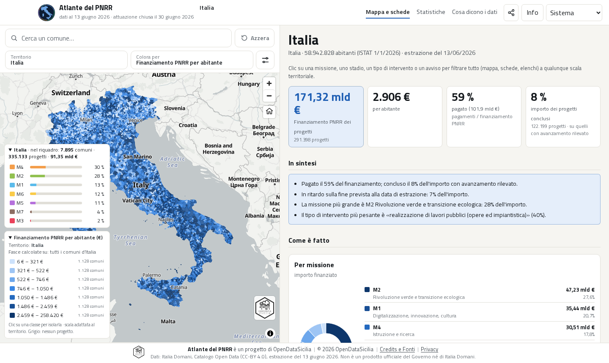
Orientarsi: gli elementi della pagina
- Cerca un comune
- Il campo in alto a sinistra. Scrivendo almeno due lettere compaiono i comuni che corrispondono, con la sigla della provincia.
- Azzera
- Torna all'Italia e toglie tutti i filtri in un colpo solo.
- Territorio
- Apre i tre menù a cascata Regione, Provincia, Comune. In alto, il percorso a briciole (Italia › Sicilia › Palermo) permette di risalire di livello con un clic.
- Colora per
- Sceglie l'indicatore che dà il colore ai comuni: finanziamento per abitante o totale, quota pagata, quota conclusa, ritardi.
- Opzioni della mappa
- L'icona con i cursori: scala colore, tipo di classi, colori invertiti, scala calcolata sul territorio o su tutta Italia.
- Legenda e «Nel riquadro…»
- Sulla mappa: la legenda spiega le fasce di colore (un clic su una fascia evidenzia i comuni di quella fascia); «Nel riquadro» riassume i progetti dei comuni visibili in questo momento.
- Lente
- Il pulsante «Grafici in mappa · Lente», accanto alle opzioni: accende una raggiera di progetti sopra la mappa (vedi il capitolo «La lente»).
- La scheda
- La colonna di destra: cifre, grafici e elenco dei progetti del territorio scelto. Cambia quando cambi territorio o filtro.
Cercare un comune
- Scrivi il nome nel campo «Cerca un comune…» (bastano due lettere).
- Scegli dall'elenco con il mouse, oppure con le frecce ↑ ↓ e Invio.
- La mappa si porta sul comune e la scheda mostra i suoi dati. L'indirizzo della pagina cambia (
#/c/…): copiandolo puoi condividere esattamente quella vista.
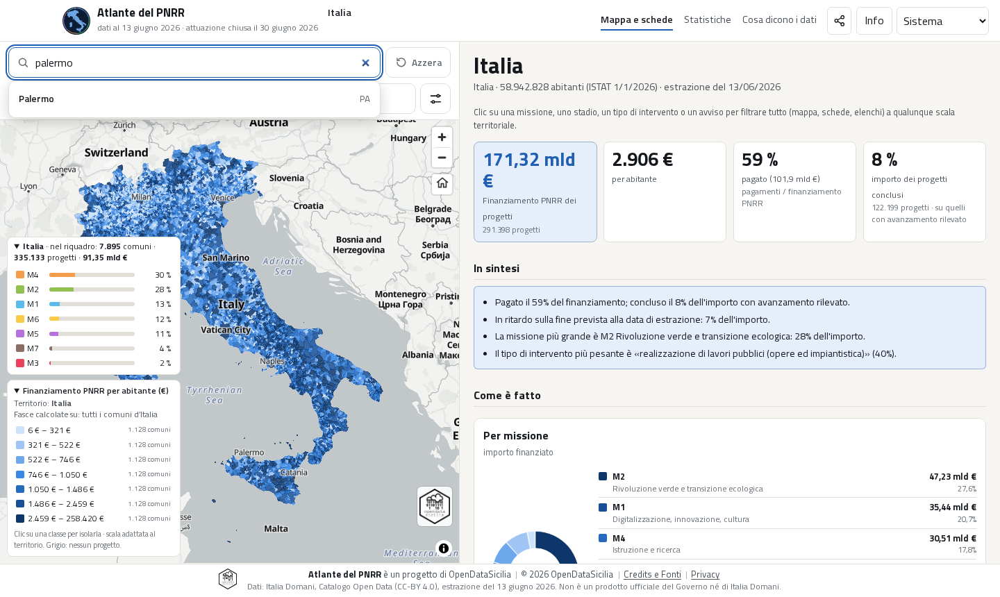
La scheda del territorio
La scheda è uguale a ogni livello (Italia, regione, provincia, comune): cambiano i numeri, non il modo di leggerli.
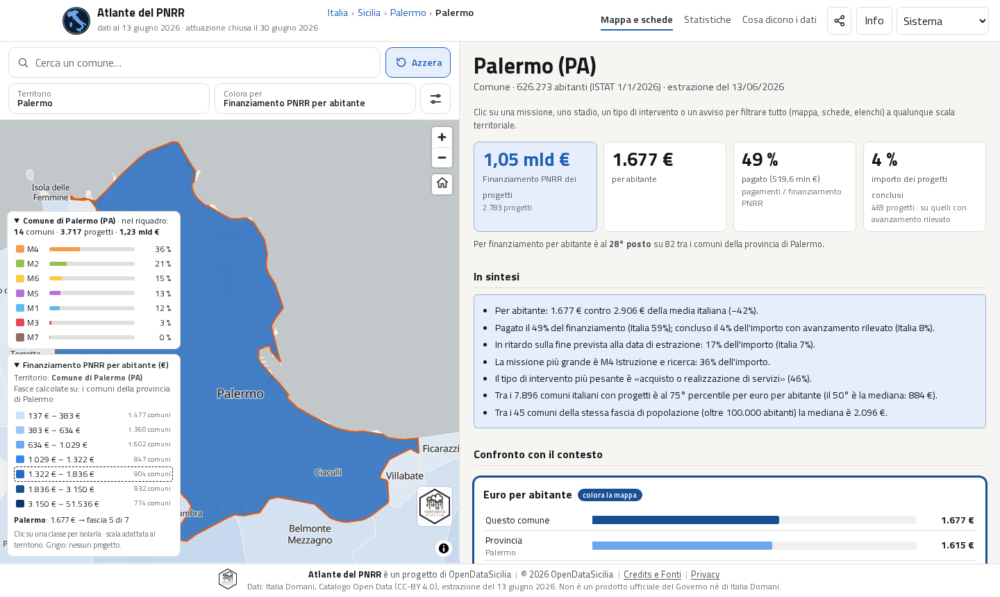
Le cifre in alto
- Finanziamento PNRR: la somma degli importi dei progetti del territorio, con il numero di progetti.
- Per abitante: lo stesso importo diviso per la popolazione (ISTAT, 1/1/2026). Permette di confrontare comuni grandi e piccoli.
- Pagato: pagamenti registrati rispetto al finanziamento.
- Importo concluso: quota dell'importo dei progetti con stato ufficiale «concluso», sui progetti con avanzamento rilevato.
I grafici: dal finanziamento alla fine dei lavori
Ogni progetto è contato nello stadio più avanzato raggiunto: gara aggiudicata, lavori avviati, concluso, pagato. Le righe sono cumulative. Sotto, «Progetti a rischio» segnala i progetti fermi, in ritardo o con la chiusura ancora da formalizzare: sono segnali da verificare, non perdite accertate.
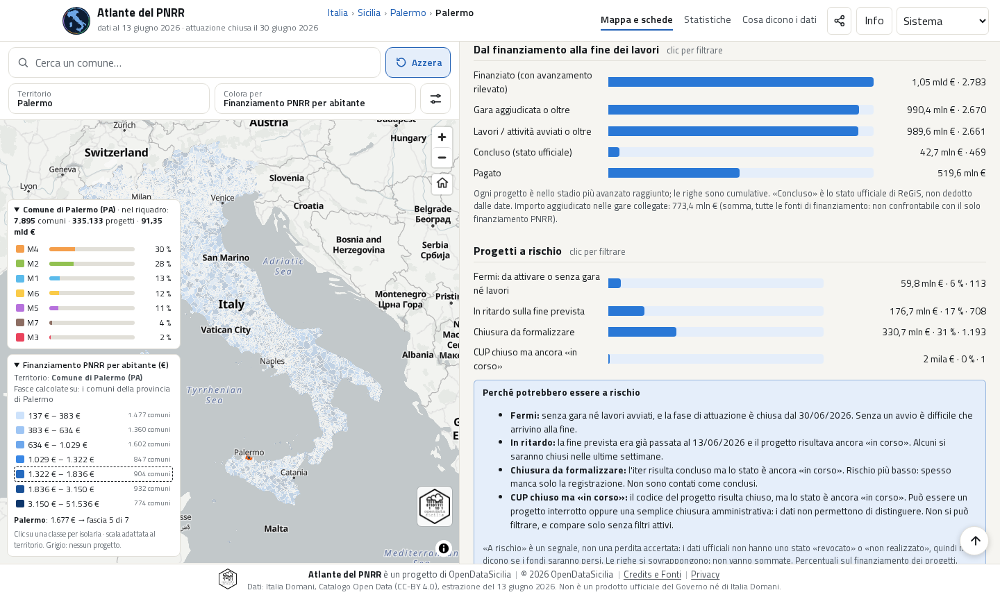
L'elenco dei progetti
Nella scheda di un comune, in fondo, c'è l'elenco dei suoi progetti: titolo, misura, stadio, finanziamento, pagato, aggiudicato. Si può cercare per titolo o soggetto attuatore, ordinare cliccando sulle intestazioni, aprire il CUP su OpenCUP e scaricare il CSV: «Scarica CSV (filtrati)» esporta ciò che vedi, «Scarica tutti i dati del comune» esporta tutto senza filtri.
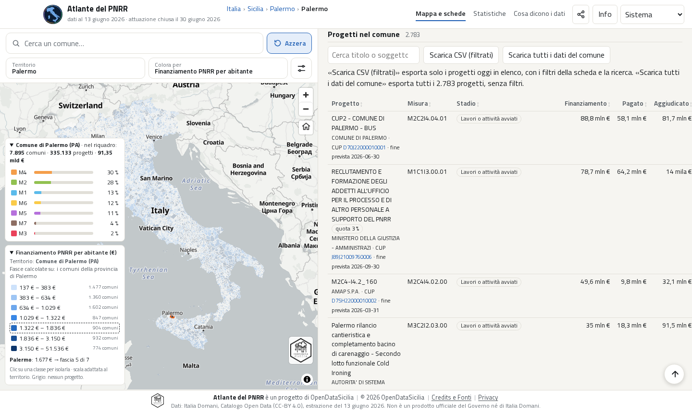
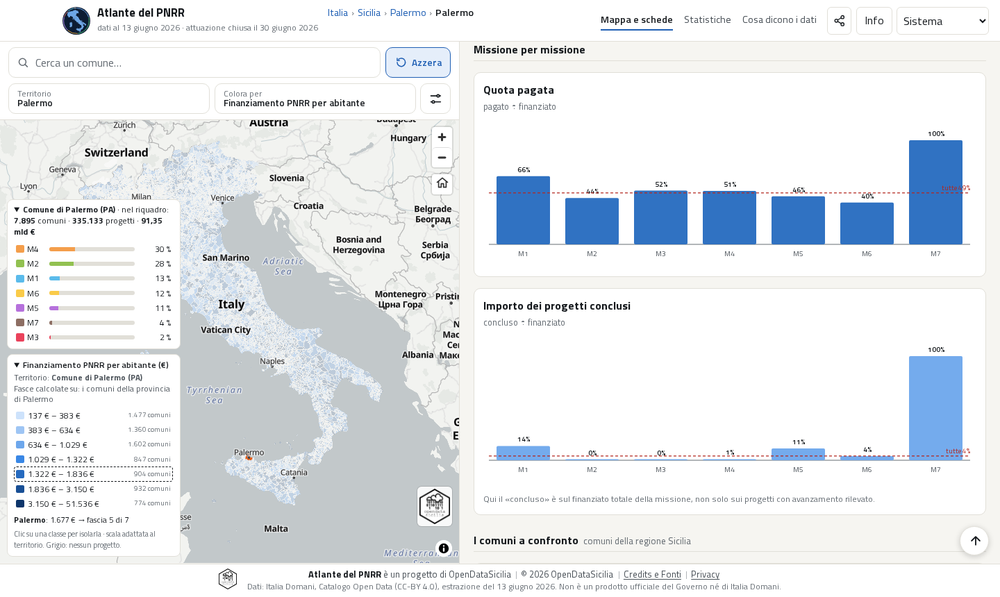
Colorare la mappa
Il pulsante «Colora per» cambia ciò che la mappa mostra. Con la stessa mappa si possono porre domande diverse: dove è arrivato più denaro per abitante? Dove i lavori sono più indietro? Dove l'iter è concluso ma lo stato è ancora «in corso»?

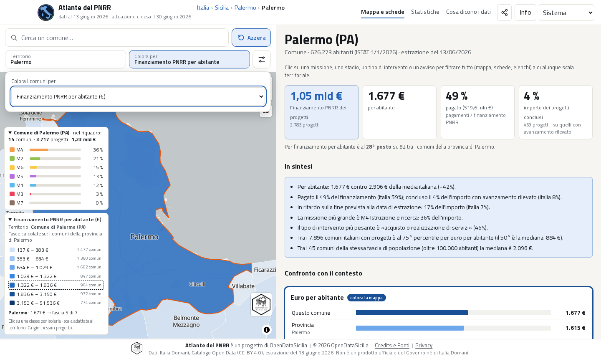

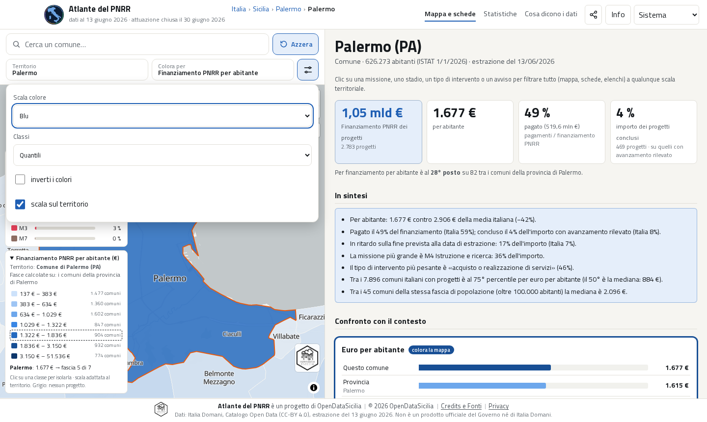
- Quantili: ogni fascia contiene lo stesso numero di comuni (la lettura più equilibrata, è quella iniziale). Intervalli uguali: fasce di pari ampiezza. Rotture naturali: fasce che separano i gruppi di valori simili.
- Scala sul territorio (attiva di default): i colori si adattano ai comuni della regione o provincia scelta. Disattivandola si usa la scala di tutta Italia e i confronti tra territori diversi sono diretti.
- I comuni senza progetti sono in grigio.
La lente: i progetti di un comune sulla mappa
La lente è una modalità della mappa: invece di leggere i progetti in un elenco, li vedi disegnati attorno a un comune, come una raggiera. È pensata per cogliere a colpo d'occhio quanti progetti ci sono, di che missione sono, quanto valgono e a che punto sono, senza lasciare la mappa. Non cambia i colori della mappa né i filtri dell'app: è una vista in più, sopra a quella di sempre.
Accenderla e spegnerla
- Accendere: clic sul pulsante «Grafici in mappa · Lente» (icona con la lente e i raggi), accanto al pulsante delle opzioni della mappa. Quando è accesa il bordo si ispessisce e la scritta diventa «Lente accesa». Se la mappa è molto lontana, la lente la avvicina da sola al comune scelto (o all'area di Palermo, se non ne hai ancora scelto uno).
- Spegnere: stesso pulsante, un altro clic; la scritta torna «Lente spenta» e la raggiera scompare. Anche il tasto Esc chiude il riquadro di un progetto aperto.
- Da link: la lente accesa si riconosce dall'indirizzo, che contiene
?lente=1. «Condividi» copia l'indirizzo giusto, così chi lo apre trova la lente già accesa. - Due modalità (solo da computer). Libera, la modalità iniziale: la mappa resta ferma e la lente si trascina dove vuoi, oppure si porta con un clic su un punto della mappa. Al centro: la lente resta ferma al centro e si sposta la mappa sotto di essa. Per cambiare, tieni premuto per mezzo secondo sul pulsante (o clic con il tasto destro, o freccia giù da tastiera): sotto compare il pulsante della modalità alternativa. Su telefono la lente è sempre al centro e non ha impostazioni.
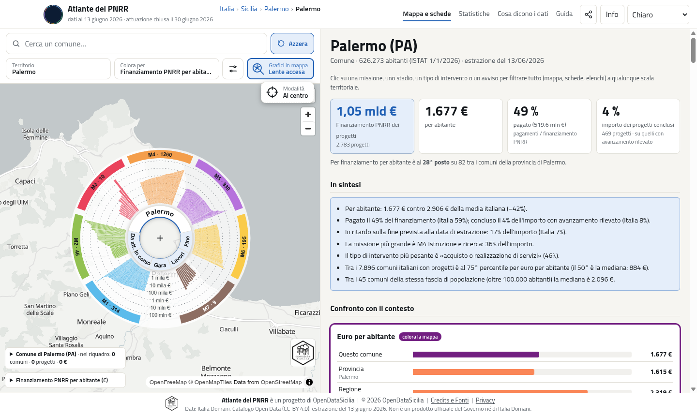
Che cosa si vede
La lente lavora sul comune che si trova sotto la sua croce: il nome è scritto sull'anello e la scheda a destra si aggiorna a spostamento finito. Servono un po' di zoom: se la mappa è troppo lontana compare l'invito «Avvicina la mappa per usare la lente».
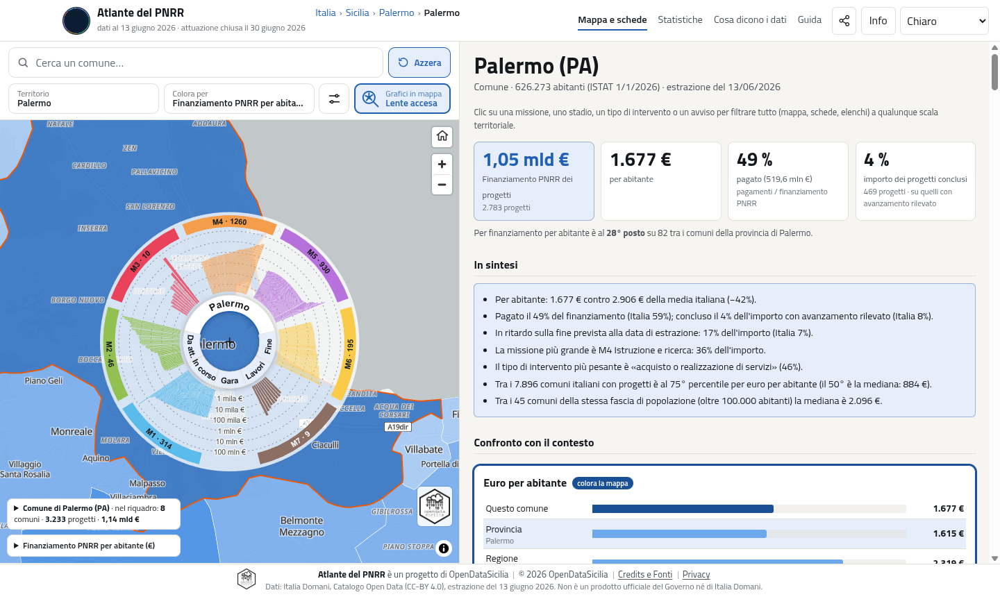
- Un raggio = un progetto
- La lunghezza è l'importo finanziato, su una scala logaritmica: i cerchi tratteggiati segnano 1 mila €, 10 mila €, 100 mila €, 1 mln € e così via, e ogni cerchio vale dieci volte il precedente. Un raggio che arriva al terzo cerchio vale dunque cento volte uno che arriva al primo. Per ogni missione si disegnano al massimo i 90 progetti più grandi.
- I sette settori
- Il colore è quello della missione (M1 digitale e cultura, M2 transizione verde, M3 mobilità, M4 istruzione, M5 inclusione, M6 salute, M7 REPowerEU). Sul nastro esterno c'è il numero dei progetti della missione. Un clic sul nastro nasconde o mostra quella missione.
- Il tono del colore
- Più il raggio è pieno, più il progetto è avanzato: pallido se è da attivare, scuro se è concluso.
- L'anello degli stadi
- Nell'anello attorno alla croce ci sono i cinque stadi (da attivare, in corso, gara, lavori, fine) con il numero di progetti. Un clic su uno stadio attenua gli altri raggi e lascia in evidenza solo quelli; un secondo clic toglie l'evidenza.
- Il nome del comune
- Un clic sul nome scritto sull'anello apre la scheda completa del comune.
Attenzione. Missioni e stadi scelti sulla lente valgono solo per la lente: non cambiano i filtri dell'app né la scheda a destra. I progetti che coinvolgono più comuni sono contati con la quota assegnata a ciascuno (lo dice il riquadro del progetto).
Dal raggio alla scheda ufficiale su OpenCUP
Ogni raggio porta fino alla scheda ufficiale del progetto su OpenCUP, il registro pubblico dei progetti di investimento (con soggetto titolare e descrizione). Si fa in tre passi:
- Passa il puntatore su un raggio (da telefono: toccalo): compare un riquadro con titolo, missione, stadio, importo finanziato e pagato, tipo di intervento, attuatore e CUP, il codice del progetto.
- Clicca il raggio per fissare il riquadro: resta aperto anche se sposti il puntatore, e in fondo compare il pulsante «Apri su OpenCUP ↗».
- Clicca il pulsante: la scheda del CUP si apre in una nuova scheda del browser. Per chiudere il riquadro clicca di nuovo lo stesso raggio, un punto vuoto della mappa, oppure premi Esc.
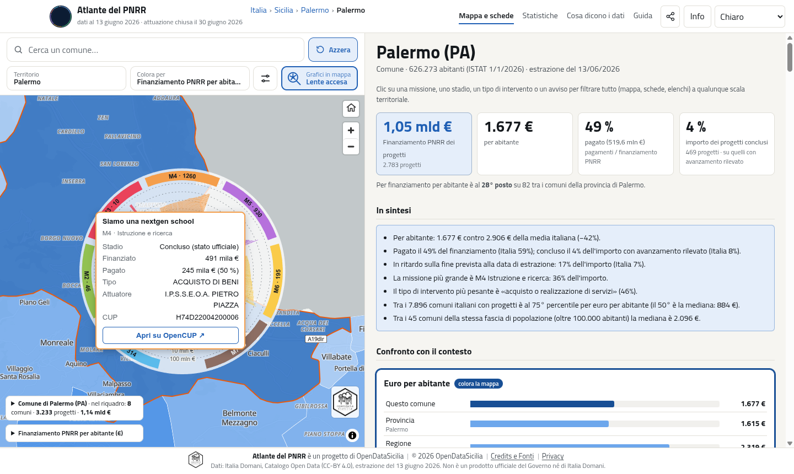
Se il CUP non è un codice valido (per esempio un segnaposto come «N/A») il riquadro lo dice e il pulsante non compare. Alcuni progetti sono incentivi a imprese o persone: il titolo e l'attuatore sono riservati e il riquadro lo segnala. Lo stesso link a OpenCUP è disponibile anche nell'elenco dei progetti della scheda, cliccando il CUP, e nel CSV scaricabile.
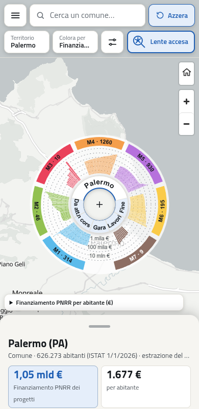
Filtrare: tutto è cliccabile
Quasi ogni riga delle schede si può cliccare. Un clic su una missione, su uno stadio, su un tipo di intervento o su un avviso (in ritardo, fermo, chiusura da formalizzare) filtra insieme mappa, grafici ed elenco dei progetti, a qualunque livello territoriale. I filtri si combinano e restano attivi quando cambi territorio. Per toglierli: «Azzera».
Missione, Componente, Misura e Sub-misura
Il Piano è articolato in quattro livelli, uno dentro l'altro, e l'atlante li distingue tutti. Si scelgono a cascata dal pulsante Piano sopra la mappa, oppure con un clic sulle tabelle «Per missione», «Per componente», «Per misura» e «Per sub-misura» della scheda:
- Missione (M1–M7): per esempio M2 «Rivoluzione verde e transizione ecologica».
- Componente (M2C1, M2C2…): la parte di una missione, per esempio M2C4 «Tutela del territorio e della risorsa idrica».
- Misura: un Investimento o una Riforma, per esempio «Investimento 4.1» (M2C4I4.04, nei dati).
- Sub-misura: le articolazioni più fini, per esempio «Investimento 1.4.1» (M1C1I1.04.01). Quando una misura non si divide, la sub-misura coincide con la misura.
Scegliere un livello allinea quelli sopra e azzera quelli sotto. I filtri valgono per mappa, scheda, grafici ed elenco dei progetti, a ogni scala territoriale; nell'elenco ogni progetto riporta Misura, Componente e codice della sub-misura, e il CSV scaricato li ha in colonne separate. Le tabelle di misure e sub-misure sono in un blocco che si apre da solo quando scegli il livello sopra. Senza filtri, a livello Italia, accanto a ogni riga compare la dotazione ufficiale e quanto non è ancora su progetti.
Ogni vista, filtri compresi, ha il proprio indirizzo: il pulsante «Condividi» in alto (icona con i tre punti uniti) lo copia, e chi lo apre vede esattamente ciò che vedi tu.
Esempio. Per sapere quanti progetti della Missione 4 (Istruzione e ricerca) sono in ritardo a Palermo: cerca «Palermo», clicca M4 nella tabella «Per missione» e poi la riga In ritardo sulla fine prevista tra i progetti a rischio. L'elenco in fondo alla scheda mostra solo quei progetti.
Statistiche e «Cosa dicono i dati»
Oltre alla mappa ci sono due pagine che scorrono, raggiungibili dal menù in alto.

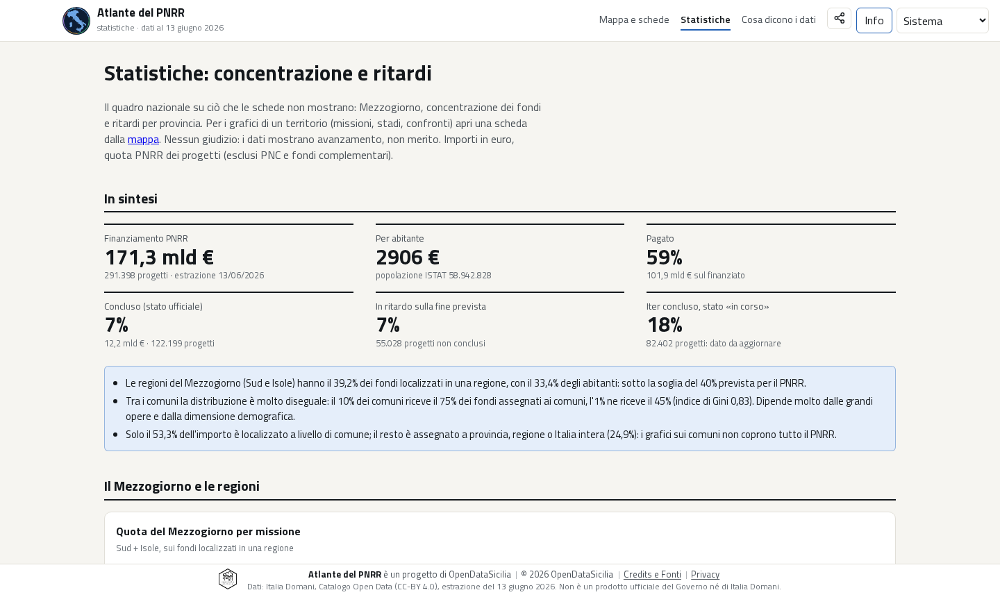

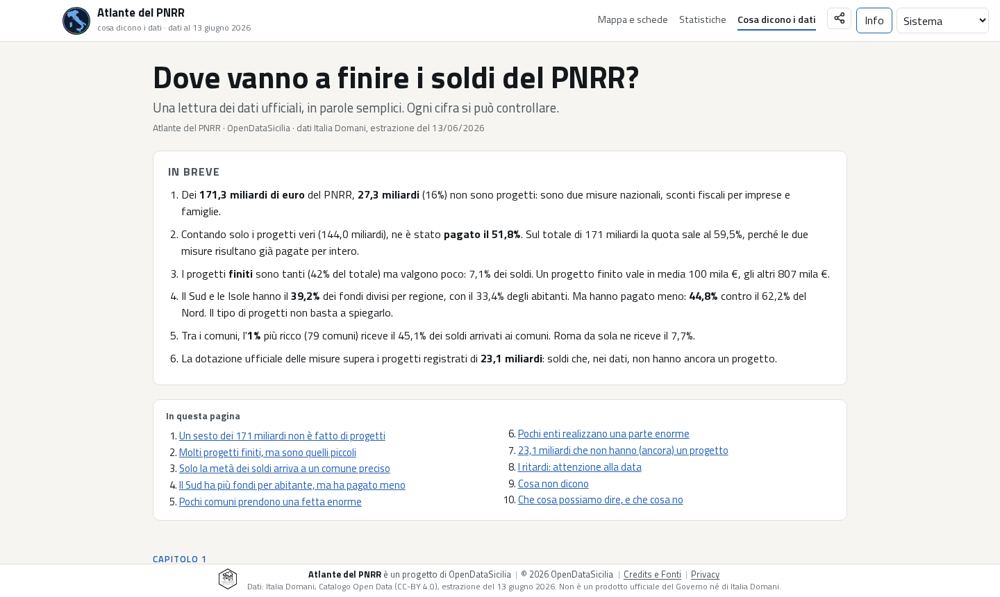
Le Statistiche usano gli stessi dati e le stesse regole della mappa ma non cambiano con i filtri. «Cosa dicono i dati» dedica un capitolo a ogni affermazione e, dopo ciascuno, spiega come è stata calcolata e che cosa i dati non permettono di concludere.
Da telefono
Il caso d'uso principale è il telefono. Su schermi stretti la mappa occupa tutto lo schermo e la scheda sta in un foglio inferiore: si trascina la maniglia verso l'alto per leggerla e verso il basso per tornare alla mappa. Il pulsante ☰ accanto alla ricerca apre il menù con le sezioni, Info, tema e crediti; nelle pagine che scorrono la × in alto riporta alla mappa. Sono disponibili anche i tre pannelli «Territorio», «Colora per» e «Opzioni».
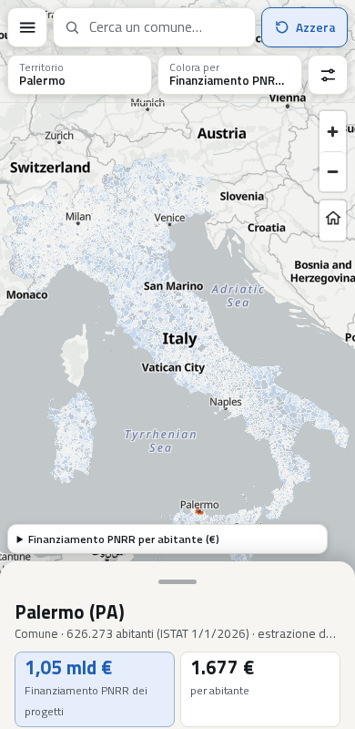
Info, tema e condividi
- Info apre una finestra con tre schede: Metodo e limiti (come sono calcolati gli importi), Fonti (da dove vengono i dati e con quale licenza) e Credits.
- Tema: «Sistema» segue le impostazioni del dispositivo; «Chiaro», «Scuro» e «Alto contrasto» si scelgono a mano e vengono ricordati.
- Tastiera: tutta l'interfaccia si usa da tastiera; Esc chiude pannelli, elenchi e finestre.
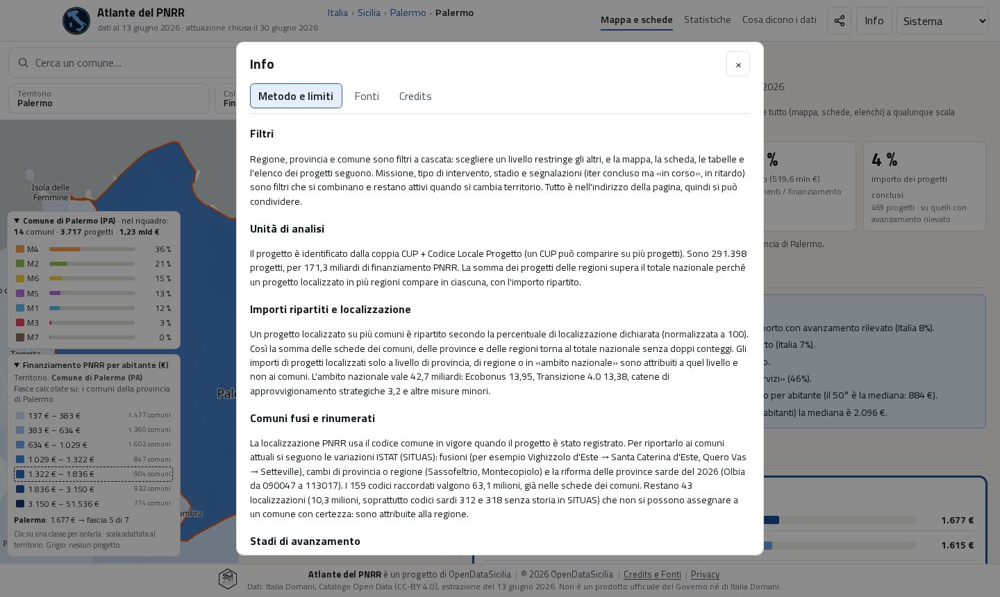
Le parole dei dati
- CUP
- Codice Unico di Progetto: l'identificativo di un investimento pubblico. Nell'atlante il progetto è la coppia CUP + Codice Locale Progetto, perché un CUP può comparire su più progetti.
- Missione (M1–M7)
- Le sette grandi aree del Piano, per esempio M2 «Rivoluzione verde e transizione ecologica» o M4 «Istruzione e ricerca».
- Componente (M1C1…)
- La sotto-articolazione di una missione: sono 17 nei dati, per esempio M1C2 «Digitalizzazione, innovazione e competitività nel sistema produttivo».
- Misura
- Un Investimento o una Riforma del Piano (per esempio Investimento 1.4). Nei dati ha un codice come M1C1I1.04.
- Sub-misura
- L'articolazione più fine di una misura (per esempio 1.4.1, in codice M1C1I1.04.01). I progetti sono collegati a una sub-misura.
- Importo ripartito
- Un progetto che interessa più comuni è diviso secondo la percentuale di localizzazione dichiarata. Così la somma dei comuni, delle province e delle regioni torna al totale nazionale.
- Aggiudicato
- Somma degli importi di aggiudicazione delle gare collegate al progetto. Comprende tutte le fonti di finanziamento dell'appalto, non solo il PNRR.
- In ritardo
- Progetto ancora «in corso» con fine prevista anteriore al 13/06/2026, data dell'estrazione dei dati.
- Soggetto attuatore
- L'ente (comune, ministero, società pubblica…) che realizza il progetto.
Cosa i dati non dicono
- I dati sono dichiarati dai soggetti attuatori in ReGiS e non sono verificati dall'atlante.
- L'estrazione è del 13 giugno 2026, il programma si è chiuso il 30 giugno: non si vedono gli ultimi giorni, quindi parte dei progetti «in ritardo» si sarà conclusa subito dopo.
- «A rischio» è un segnale: i dati ufficiali non hanno uno stato «revocato» o «non realizzato» e non dicono se i fondi saranno persi.
- Alcune localizzazioni (provincia, regione, «ambito nazionale») non si possono attribuire a un comune: restano al livello più basso certo.
- Il sito non è un prodotto ufficiale del Governo né di Italia Domani. Errori e correzioni si segnalano a OpenDataSicilia.
Dati: Italia Domani, Catalogo Open Data (CC-BY 4.0). Metodo e limiti · Fonti · Credits